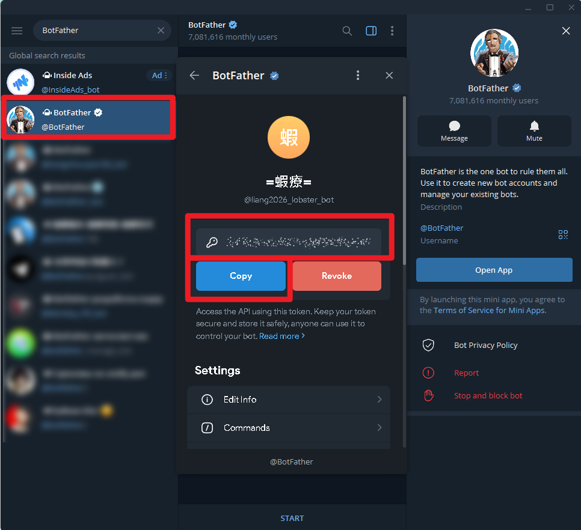
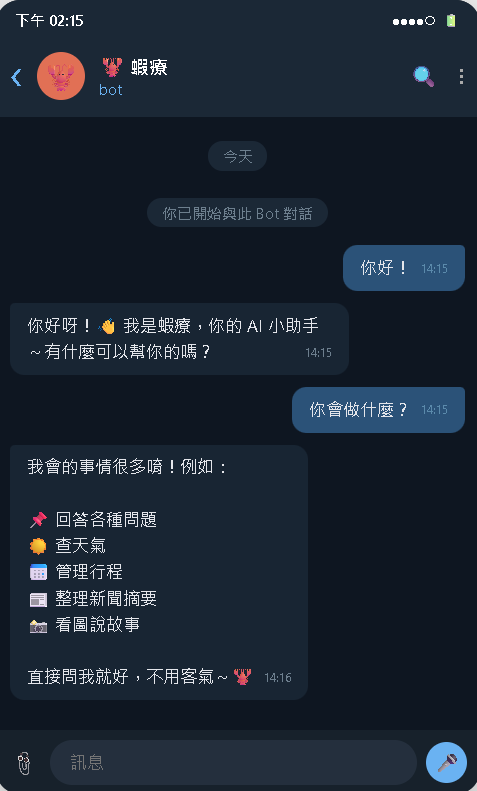

AI Agent 自主代理三王實戰
CH7 | 多一個管道——Telegram 串接
讓龍蝦多一個家——用 Telegram 和龍蝦聊天，體驗比 LINE 更快速的 Bot 設定流程與獨家功能
📋 本章學習目標
- 了解 Telegram 和 LINE 在機器人功能上的差異
- 用 BotFather 在一分鐘內建立 Telegram 機器人
- 將 Telegram 連接到 OpenClaw，同時支援 LINE 和 Telegram
- 熟悉 Telegram 獨有的 Bot 功能（指令選單、群組、Inline 模式）
🔗 對應資源
7.1 Telegram 有什麼不一樣？
LINE 是你服務別人的主力平台（台灣人都用），Telegram 是你自己測試和開發的最佳遊樂場（設定快、限制少、功能多）。兩個都學起來，是最理想的組合。
| 比較項目 | Telegram | LINE |
|---|---|---|
| 建立 Bot 要多久 | 1 分鐘（和 BotFather 聊三句話） | 15-20 分鐘（開發者帳號 + Channel 設定） |
| 需要開發者帳號嗎 | 不需要 | 需要（LINE Developers） |
| 需要填表單嗎 | 不需要 | 需要（而且欄位不少） |
| 自動回覆衝突 | 不會發生 | 需要手動關閉 |
| 指令選單 | 內建（按 / 自動列出） | 需要額外設定 Rich Menu |
| 群組中使用 Bot | 簡單（直接 @ 呼叫） | 需要邀請加入 + 額外設定 |
| 傳送檔案限制 | 最大 2GB | 最大 200MB |
| Webhook 設定 | 自動（外掛幫你搞定） | 手動（要去 Console 填 URL） |
| 台灣用戶數 | 較少 | 極多（幾乎人人有） |
7.2 安裝 Telegram & 找到 BotFather
安裝 Telegram
Telegram 支援幾乎所有平台，建議同時在手機和電腦上安裝：
📱 手機版
App Store（iPhone）或 Google Play（Android）搜尋「Telegram」下載
💻 電腦版
desktop.telegram.org
打指令比較方便
🌐 網頁版
web.telegram.org
不想裝軟體也行
找到 BotFather
BotFather 是 Telegram 官方的「機器人管理機器人」——你透過和 BotFather 聊天來建立和管理你的機器人。
【步驟 1】 打開 Telegram，在搜尋欄輸入 @BotFather，找到有藍色勾勾認證的帳號。

【步驟 2】 點進 BotFather，按底部的 「START」 按鈕開始對話。
已經成功和
@BotFather 開始對話，聊天視窗裡看得到它回你的指令清單。如果連 BotFather 都還沒加到，先不要往下。
7.3 用 BotFather 建立機器人
整個過程就像在餐廳點餐——你跟服務生說你要什麼，服務生幫你準備好。三句對話，不到一分鐘。

步驟流程（指令式）
| 步驟 | 你做的事 | BotFather 的回應 |
|---|---|---|
| 步驟 1 | 在 BotFather 聊天視窗的輸入框 輸入 /newbot | 問你機器人的顯示名稱 |
| 步驟 2 | 直接在 同一個聊天視窗 輸入顯示名稱（可中文） 例如： 龍蝦小助手 | 問你機器人的 username |
| 步驟 3 | 再直接在 同一個聊天視窗 輸入英文 username（必須以 bot 結尾）例如： my_lobster_ai_bot | 恭喜！給你 Bot Token |
步驟流程（表單式）
如果你看到的是按鈕和表單而不是純文字對話，那是 BotFather 的新版介面：
👆 動作：在表單欄位填入「Bot 名稱」和「Bot username」
👆 動作：按「Create bot」送出
👀 結果：BotFather 回覆你 Bot Token，效果和指令式完全相同
取得 Bot Token
7123456789:AAHxxx-xxxxxxxxxxxxxxxxxxxxxxxxxx
這串 Token 就是你機器人的「鑰匙」。請立刻複製存到帳號清單裡。
/revoke 重新產生一組新的。
username 只能用英文、數字、底線，不能有空白。
而且一定要以
bot 結尾，例如 my_lobster_ai_bot。建議你把
Bot username 和 Bot Token 都一起記到 龍蝦課程-帳號清單.txt。
1. 你的
Bot username2. 你的
Bot Token這兩個都要先存好，再進下一頁連接 OpenClaw。
7.4 將 Telegram 連接到 OpenClaw
選用：設定機器人額外資訊
| BotFather 指令 | 用途 |
|---|---|
/setdescription | 設定機器人的簡介（搜尋到時會看到） |
/setabouttext | 設定「關於」頁面的文字 |
/setuserpic | 上傳機器人的大頭照 |
/setcommands | 設定指令選單（按 / 就能看到所有指令） |
安裝 Telegram 外掛 + 設定 Token
只需要三個指令就完成連接：
# 步驟 1：安裝 Telegram 外掛 openclaw plugins install @openclaw/telegram # 步驟 2：設定 Bot Token openclaw config set channels.telegram.botToken "你的Bot Token" # 步驟 3：重啟龍蝦 openclaw gateway restart
直接在你安裝 OpenClaw 時用的 PowerShell 或終端機輸入。
如果你前一章 LINE 已經能正常用，代表 Gateway 和對外網址大多都已經有了，現在通常只要補裝 Telegram 外掛、貼 Token、重啟就好。
先安裝外掛，再設定 Token，最後才重啟 Gateway。
不要只改完 Token 就直接跳去 Telegram 測試，重啟前新設定可能還沒生效。
Webhook 自動設定
Telegram 外掛啟動時會自動幫你設定好 Webhook。不需要像 LINE 那樣手動填 URL。外掛會偵測你的對外網址（ngrok / Cloudflare Tunnel / Codespaces），然後自動註冊。
你的 OpenClaw 本來就要能從外部連進來。
也就是說，地端安裝的人要確認
ngrok 或 Cloudflare Tunnel 還在跑；Codespaces / Zeabur 則要確認公開網址還有效。如果前一章 LINE 已經能正常回覆，這裡通常就沒問題。
最簡單的判斷方式就是：重啟後直接去 Telegram 搜尋你的 Bot，按 START。
如果很快就收到配對碼，通常代表 Telegram 外掛和 Webhook 都已經接上了。
7.5 第一次 Telegram 對話

對話流程
| 步驟 | 操作 | 說明 |
|---|---|---|
| 步驟 1 | 搜尋你的機器人 username | 例如 @my_lobster_ai_bot |
| 步驟 2 | 點擊「START」按鈕 | 開始和機器人的對話 |
| 步驟 3 | 完成配對 | 龍蝦回覆配對碼，到終端機執行：openclaw pairing approve telegram 配對碼 |
| 步驟 4 | 再傳一次訊息 | 龍蝦正常回覆你了！ |
試試各種對話
你在 CH6 學到的所有對話方式——文字聊天、任務型對話、角色扮演、多輪修改——在 Telegram 上全部都能用。
你好，我從 Telegram 找你 幫我列出五個台北的必去景點 把上面的清單翻成英文
先回 BotFather 記下你剛剛設定的
username。Telegram 搜尋時通常要用
@username 去找，例如 @my_lobster_ai_bot。找到後先按 START，不按開始，Bot 不會主動回你。
配對碼不是回到 Telegram 裡輸入，而是回到你剛剛執行 OpenClaw 的 PowerShell / 終端機。
在那個視窗輸入
openclaw pairing approve telegram 配對碼。輸入完成後，再回 Telegram 傳第二次訊息測試。
7.6 Telegram 獨有的好用功能
這些是 LINE Bot 做不到（或做起來很麻煩）的功能：
📋 斜線指令選單
在輸入框打 /，指令選單自動彈出。所有可用指令一目了然，不用背，點一下就執行。
| 指令 | 功能 |
|---|---|
/start | 開始對話 |
/help | 使用說明 |
/status | 運行狀態 |
/clear | 清除記錄 |
👥 群組中使用龍蝦
把龍蝦加入群組，用 @ 呼叫：
@my_lobster_ai_bot 明天台北天氣如何？
群組裡每個人都能呼叫龍蝦，每個人的對話是獨立的，龍蝦不會搞混。
✨ Inline 模式
在任何聊天視窗輸入 @你的機器人名稱 問題，不用切換視窗就能即時呼叫龍蝦。
@my_lobster_ai_bot 翻譯：我想訂位
到 BotFather 輸入 /setinline 啟用。
📁 大型檔案傳送
LINE 檔案上限 200MB，Telegram 上限 2GB。如果要傳大型 PDF、影片、資料集讓龍蝦處理，用 Telegram 更方便。
@ 它的訊息和 / 指令。要關閉可到 BotFather 輸入 /setprivacy，但請謹慎使用。
先確認你是不是有用
@你的Bot名稱 明確叫它。如果只是直接丟一句話，Privacy Mode 開著時，Bot 可能根本看不到。
7.7 LINE 和 Telegram 同時使用
現在你的龍蝦同時連接了兩個平台，帶來了一些有趣的特性：
🧠 跨平台記憶
龍蝦的記憶是跨頻道共享的。你在 LINE 說的事情，在 Telegram 也記得。
（LINE）記住我下禮拜三要開會 （Telegram）我下禮拜有什麼行程？ 龍蝦：你之前提到下禮拜三要開會。
👤 使用者分別管理
每個平台的配對獨立。LINE 和 Telegram 的帳號，龍蝦視為不同使用者（除非你特別設定）。
🎯 選擇最佳場景
根據情境選擇最方便的平台使用。
使用場景推薦
| 情境 | 推薦用 | 原因 |
|---|---|---|
| 在外面用手機快速問問題 | LINE | 台灣人都有，隨手就開 |
| 在電腦前工作時使用 | Telegram | 電腦版體驗更好 |
| 需要傳大檔案 | Telegram | 上限 2GB |
| 想在群組中使用 | Telegram | 群組 Bot 功能更完善 |
| 分享給朋友或同事用 | LINE | 對方不用額外安裝 App |
| 在外面用手機遠端操控電腦 | Telegram | 操控瀏覽器、管理檔案、安裝 Skills（詳見 CH18） |
雖然龍蝦的知識和部分記憶是共用的，但 LINE 配對 和 Telegram 配對 仍然是兩次獨立授權。
也就是說，LINE 已經能聊，不代表 Telegram 端就不用再配對一次。
7.8 常見問題 FAQ
Q1：Bot 建好了但龍蝦不回覆？
依序檢查：
- Bot Token 有沒有正確設定：
openclaw config set channels.telegram.botToken "你的token" - Gateway 有沒有重啟：
openclaw gateway restart - 地端安裝的話，ngrok 有沒有在運行
- 第一次要完成配對流程（拿到配對碼然後 approve）
Q2：在群組裡 @ 龍蝦但它沒反應？
確認機器人有被正確加入群組，且群組設定允許 Bot 接收訊息。
Q3：BotFather 說 username 已被使用？
Bot username 是全球唯一的。換一個更獨特的名字，加入你的名字或獨特字串，例如 aliang_lobster_2026_bot。
Q4：Telegram 和 LINE 會互相干擾嗎？
不會。兩個頻道完全獨立運作。龍蝦收到 LINE 訊息用 LINE 回覆，收到 Telegram 訊息用 Telegram 回覆，不會搞混。
先看 BotFather 給的
Token 有沒有貼對。再看
openclaw gateway restart 之後 Gateway 是否正常。最後才檢查對外連線（
ngrok、Cloudflare、Codespaces、Zeabur）。
7.9 小結與展望
🤖 BotFather
和 BotFather 聊三句話，一分鐘建立 Telegram 機器人。
🔌 三行指令連接
安裝外掛 + 設定 Token + 重啟，三個指令搞定。
✨ 獨家功能
斜線指令選單、群組 Bot、Inline 模式、2GB 檔案傳送。
🌐 雙平台
龍蝦同時住在 LINE 和 Telegram，跨頻道記憶共享。
📖 下一章預告：CH8 龍蝦也會看圖和自拍
到目前為止你和龍蝦的互動都是「傳文字、收文字」。下一章要解鎖龍蝦的視覺能力——傳照片讓龍蝦辨識、分析截圖、翻譯路標，甚至讓龍蝦「自拍」回傳照片給你！